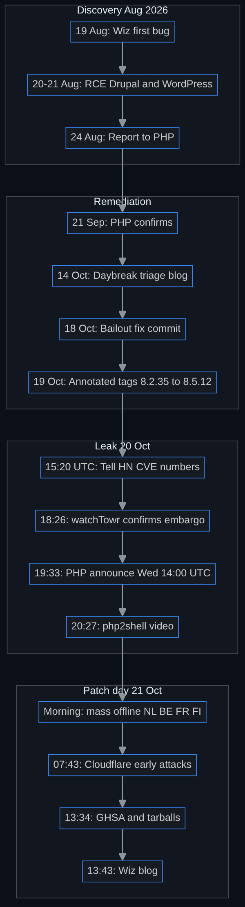
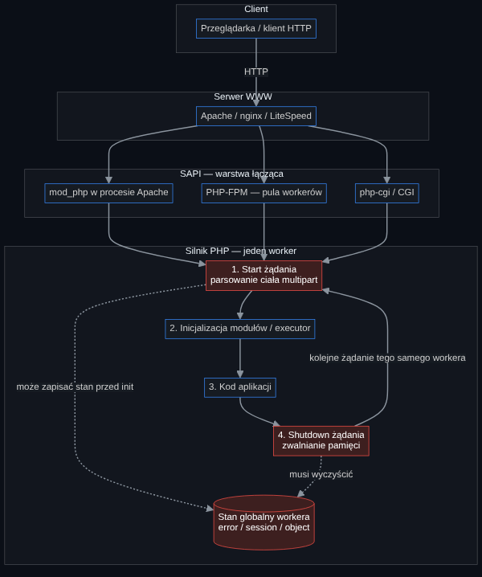
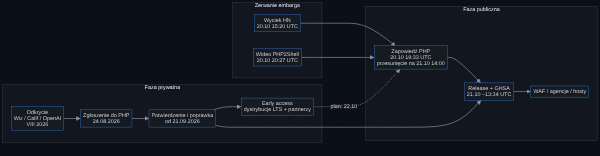
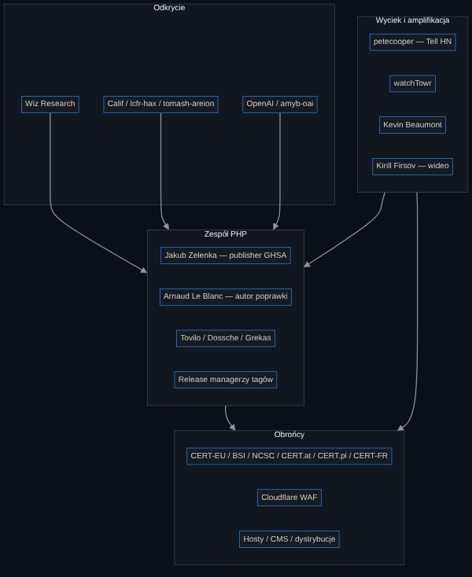

v1.0 · as of 2026-10-21 14:05 UTC · defensive analysis
PHP2Shell — the attack bible
A deep case study of the critical core-PHP vulnerabilities CVE-2026-109618 and CVE-2026-109619
- Document version: 1.0 (English adaptation of the Polish master)
- As of: 21 Oct 2026, 14:05 UTC (16:05 CEST) — about 30 minutes after the patches went public
- Nature: Defensive, historical analysis — no exploit code, payloads, PoCs, or attack instructions
- Labels: [P] primary source · [D] third-party report · [?] open / conflicting · [A] this document’s analysis
- Time zones: UTC; Warsaw time in parentheses. 20–21 Oct 2026: CEST = UTC+2
Editorial note. Written on patch day. Distro packages, confirmed exploitation, and full discoverer write-ups are still settling. Every claim is footnoted; section 12 and the changelog say what would revise this picture.
Changelog
- 1.0 (2026-10-21 14:05 UTC) — First release. Sources: php.net, GHSA, the fix commit, Wiz, watchTowr, BSI, NCSC UK, NCSC-NL, CERT-EU, CERT.at, CERT Polska, CERT-FR, NOS, W3Techs, Modat, heise, SecurityWeek, Huntress, Tenable, Cloudflare, Docker PR, Ubuntu tracker, HN, Mastodon; historical comparisons (Log4Shell, Heartbleed, CVE-2024-4577, OpenSSL 3.0.7).
Contents
- TL;DR and one-page overview
- Background: PHP and the request lifecycle
- The vulnerabilities, in depth
- Discovery and AI-assisted research
- Coordinated disclosure
- The leak and the name PHP2Shell
- Patch day
- The exploit race
- Defenders’ response
- Exposure and impact
- Historical comparison
- Lessons learned
- Open questions
0. TL;DR and one-page overview
In one paragraph. Around 13:34 UTC on 21 October 2026, the PHP security team published 8.5.12, 8.4.27, 8.3.36 and 8.2.35 and two GitHub advisories for critical engine bugs: CVE-2026-109618 (“RCE via OOM corruption”) and CVE-2026-109619 (“RCE via stale global state”), both CVSS v4.0 9.2 [P][1][2][3]. Both stem from the same pattern: when PHP aborts a request under emergency conditions (especially out-of-memory), it can leave internal state pointing at memory that no longer exists — and a later step or a later request on the same worker can use that “ghost”. On Apache + mod_php, unauthenticated remote code execution was demonstrated before any application code runs [P][3:1]. Wiz Research claims discovery with Calif and OpenAI, using frontier AI models heavily [D][4]. A Thursday 22 Oct embargo broke with a 20 Oct leak, forcing PHP to pre-announce and pull the release forward by a day [P][5][6]. In the Netherlands, Belgium, France and Finland, some sites went offline as a precaution [P][7]. As of this version’s cutoff there is no independently confirmed in-the-wild exploitation; reports conflict [?].
Key facts
- IDs: CVE-2026-109618 (GHSA-w8hw-w9fx-j79w), CVE-2026-109619 (GHSA-6wmf-4rv5-p3rp) [P]
- CVSS v4.0: 9.2 ·
AV:N/AC:H/AT:P/PR:N/UI:N/VC:H/VI:H/VA:H/SC:N/SI:N/SA:N(both) [P]- CWE: 416, 755, 824, 1325, 1419 [P]
- Impact: unauth RCE as the web worker; 619 also memory disclosure [P]
- Worst SAPI: Apache mod_php (before application code) [P]
- Fixed: 8.5.12, 8.4.27, 8.3.36, 8.2.35; minimal source backports for 7.4/8.0/8.1 [P]
- Publication: GHSA 13:34 UTC; 8.5.12 tarball
Last-Modified13:33:59 GMT [P]- Original embargo: 22 Oct 2026 11:00 ET (15:00 UTC) [P]
- GHSA credits: sagitzadik-wiz, tomash-areion, lcfr-hax, amyb-oai [P]
- Fix: Arnaud Le Blanc (+ Tovilo, Zelenka, Dossche, Grekas); +11,556/−1,017 across 300 files [P]
- PHP share: 69.3% of sites with a known server-side language (W3Techs 21 Oct) [P]
- Exposure: 4.38M PHP services / 1.89M hosts; ~79% EOL (Modat 20 Oct) [D]
- Complete fix: update only [P]
What is new here [A]: (1) a bug in the runtime, not the app; (2) AI in discovery and — researchers say — in making exploitation practical; (3) an embargo leak that became a ~22-hour race; (4) precautionary public-site takedowns in several EU countries before a patch existed.

1. Background: PHP on the web and the request lifecycle
1.1 How large PHP is
Rasmus Lerdorf created PHP; the first version shipped in 1995 [D][7:1]. Per W3Techs (21 Oct 2026), PHP is used by 69.3% of websites whose server-side language is known; among PHP sites, 65.2% run version 8, 27.0% version 7, 7.7% version 5, 0.1% version 4 [P][8]. WordPress, Drupal, Joomla, Magento and MediaWiki all run on PHP [D][4:1].
Method note [A]: “69.3%” is of sites with a recognized server-side language, not “the whole Internet”. Headlines like “70% of the Internet” (Wiz) are simplifications [D][4:2].
1.2 What happens when a browser asks for a page
PHP is usually embedded in a web server or run as a pool of workers. The glue is called a SAPI (Server API).
- Apache mod_php
- How it works: PHP inside Apache processes (typically prefork: many processes, each handling requests in sequence).
- Why it matters for PHP2Shell: Worst case: request shutdown always runs, even when startup failed [P][1:1].
- PHP-FPM
- CGI / php-cgi
- How it works: Classically one process per request (or FastCGI).
- Why it matters for PHP2Shell: Listed as affected [P][3:2].
- FrankenPHP
- How it works: Modern PHP application server.
- Why it matters for PHP2Shell: Source analysis: likely mod_php-like on shutdown [P][1:3].
- LiteSpeed LSAPI
- How it works: FPM-like model.
- Why it matters for PHP2Shell: App-specific paths “likely, unvalidated” [P][1:4].
Analogy [A]: a PHP worker is a clerk’s desk. Each request is a case file. After the case, every folder must be put away. If the lights go out in a panic (OOM / fatal), a sticky note with a folder address may remain for a folder that was already shredded. The next visitor — same desk — treats that address as live. That is “stale global state” and “OOM corruption”.

1.3 Why this matters
Most critical PHP-ecosystem bugs live in applications. Here the bug is in the engine [P][3:3]. A “Hello World” app on an affected version is still exposed [D][4:3]. Inventory must cover CMSes, control panels, appliances with PHP in firmware, and hidden php.exe binaries [D][9][10].
2. The vulnerabilities, in depth
2.1 Shared pattern
Official advisories and the Wiz blog describe variants of the same cross-request memory-safety failure [P][1:5][2:2][4:4]:
- An operation stores request-owned state in a worker-global location (producer).
- A fatal / OOM / diagnostic aborts before the matching reset.
- Request memory is freed; the global still points at it.
- The same worker handles another request.
- An operation before normal initialization reads that pointer (consumer) → use-after-free → with a suitable heap layout: RCE.
Why memory-safety bugs in a runtime are hard [A]: they are not “one hole in function X” but an interaction of allocator, error handling (longjmp / bailout), many extensions and many SAPIs. The fix had to change OOM strategy and reset a wide set of globals (~300 files) [P][11].
2.2 CVE-2026-109618 — RCE via OOM corruption
What was wrong. PHP used longjmp() on OOM to leave the current context and abort the request. When request memory was only partly initialized, that early exit left invalid state; shutdown could treat it as valid [P][1:6].
OOM strategies (concepts only) [P][1:7]: multipart without a usable Content-Length; unbounded part headers (more memory than on the wire); empty file controls not counting toward max_file_uploads but still creating metadata. Application behavior can also reach OOM.
Why mod_php is worst. Apache mod_php unconditionally runs request shutdown even when startup failed. Body parsing during startup can exhaust memory_limit in the invalid-state window — before the application runs [P][1:8][3:4]. FPM exits the child on failed startup; source analysis still treats FPM as susceptible, but no complete FPM exploit for 618 was demonstrated [P][1:9].
The fix. Remove longjmp() for OOM → soft OOM at a VM safe point + hard OOM via _exit() at a second threshold [P][1:10][11:1].
2.3 CVE-2026-109619 — RCE via stale global state
What was wrong. Worker-global state (error / session / object / extension) can point at request memory. A fatal, OOM or diagnostic leaves a stale pointer; a later request consumes it before normal initialization [P][2:3].
Confirmed consumers [P][2:4]:
- INI diagnostics before init — warnings/deprecations while applying settings (
.htaccess/php_valueon mod_php;PHP_VALUEon FPM) before the executor initializes. Hiding diagnostics does not help. - Session upload progress — can reach session handling before ordinary initialization; independent of the INI path.
Strongest demonstrated case: fatal_error_backtraces (PHP 8.5) + a diagnostic → confirmed RCE on mod_php. Session upload-progress RCE: confirmed on mod_php and FPM [P][2:5].
Wiz’s four classes (grouped under two CVEs) [D][4:5]: upload-progress unserializer UAF; PHPSESSID memory disclosure; fatal-backtrace UAF; OPcache type confusion. Directionally aligned with the GHSA; chain detail is from Wiz.
2.4 CVSS v4.0 decoded
Both CVEs: CVSS:4.0/AV:N/AC:H/AT:P/PR:N/UI:N/VC:H/VI:H/VA:H/SC:N/SI:N/SA:N → 9.2 [P][1:11][2:6].
| Field | Value | Meaning |
|---|---|---|
| AV:N | Network | Remotely reachable |
| AC:H | High | High attack complexity (heap layout, conditions) |
| AT:P | Present | Preconditions in the system |
| PR:N | None | No authentication |
| UI:N | None | No user interaction |
| VC/VI/VA:H | High | Full impact on confidentiality, integrity, availability of the vulnerable system |
| SC/SI/SA:N | None | No scored impact on subsequent systems |
Early chatter said “CVSS 10.0” [D][12][5:1] — PHP’s official score is 9.2 with AC:H and AT:P.
2.5 Versions: fixed, EOL, backports
| Branch | PHP support | Fix |
|---|---|---|
| 8.5 | supported | 8.5.12 |
| 8.4 | supported | 8.4.27 |
| 8.3 | supported | 8.3.36 |
| 8.2 | security until 31 Dec 2026 | 8.2.35 |
| 8.1 / 8.0 / 7.4 | EOL | minimal source backports; no official releases |
| ≤ 7.3 / 5.x | EOL | no official fix; LTS vendors may backport |
[P][3:5]. “Since 5.4” / “from PHP 5” comes from Wiz, CERT-EU, NCSC-NL and peers — not from the GHSA vulnerable_version_range tables (which list only fixed branches) [P/D][1:12][4:6][13][14].
2.6 Incomplete mitigations
PHP and core developers stress: the only complete mitigation is updating [P][3:6][15]. Temporary measures (e.g. memory_limit=-1, session.upload_progress.enabled=0, on 8.5 fatal_error_backtraces=0) shrink specific paths; they do not make an install safe [P][3:7]. Do not use RLIMIT_AS/RLIMIT_DATA as substitutes — they can force the vulnerable mmap→longjmp path [P][1:13].
3. Discovery: Wiz, Calif, OpenAI and AI-assisted research
3.1 Timeline per Wiz (third-party)
| Date | Event | Status |
|---|---|---|
| 19 Aug 2026 | First bug with Wiz Atlas, “Gemini 4 Argon”, “GPT-5.6 Sol” | [D][4:7] |
| 20 Aug 2026 | Unauth RCE on Drupal | [D][4:8] |
| 21 Aug 2026 | Unauth RCE on WordPress | [D][4:9] |
| 24 Aug 2026 | Report to PHP | [D][4:10] |
| 21 Sep 2026 | PHP acknowledges and starts a coordinated fix | [D][4:11] |
| 21 Oct 2026 | Public patches + Wiz blog | [P][4:12][3:8] |
GHSA credits: sagitzadik-wiz, tomash-areion, lcfr-hax, amyb-oai [P][1:14]. Wiz thanks Calif and OpenAI; heise describes a Calif audit with the PHP Ecosystem Security Team under OpenAI’s “Patch the Planet” [D][4:13][10:1]. Calif had earlier (1 May 2026) published separate research on a 21-year-old PHP UAF [P][16].
3.2 What AI changes in bug hunting
Wiz: the vulnerable code had been present for more than a decade; building a working chain meant combining multiple bugs and adapting to memory layouts — frontier models “substantially reduced that barrier” [D][4:14]. BSI warned attackers may reverse patches with AI tools “within a few hours” [P][17].
[A] That does not mean “AI found the CVE alone”. It means the cost of going from a hard memory-safety bug to credible RCE across many targets fell. The same economics apply to attackers (patch reverse-engineering) and defenders (triage).
The PHP Foundation (14 Oct 2026) described using Daybreak Red (OpenAI) to validate reports and sort the queue — context for a surge of AI-assisted submissions [P][18].
3.3 The 2024 audit and the Ecosystem Security Team
In 2024 Quarkslab (Sovereign Tech Agency / OSTIF) found 17 security-relevant findings; heise notes a similar class of issue had already sparked remediation debate [P/D][19][10:2]. In May 2026 the PHP Foundation announced an Ecosystem Security Team [D][10:3]. PHP2Shell shows both investment in security and a long architectural tail around bailout/OOM [A].
4. Coordinated disclosure 101 and how it went here
4.1 Coordinated disclosure 101
Typical flow [A]: (1) private report; (2) confirm and fix; (3) embargoed notice to distros/LTS and selected partners; (4) simultaneous advisories + releases; (5) ecosystem messaging. Goal: shrink the window between attacker knowledge and patch availability.
4.2 How it went here

- Report and remediation (Aug–Oct 2026) — per Wiz [D][4:15]. Commit “Avoid state corruption via bailout” on 18 Oct 2026; annotated tags on 19 Oct [P][11:2][20].
- Early access. php.net: “Linux distributions and LTS vendors received the patches in advance” [P][3:9]. Wiz lists Automattic, Akamai, AWS, Cloudflare, Fastly, Google, Imperva, Microsoft, Vercel and others for pre-day-zero mitigations [D][4:16]. watchTowr pushed Active Defense for paying clients before the patch [P][5:2].
- Embargo. watchTowr: originally Thursday 22 Oct, 11:00 ET (= 15:00 UTC) [P][5:3].
- Pre-announcement after the leak. At 19:33 UTC on 20 Oct, Jakub Zelenka (
bukka) announced Wednesday 21 Oct 14:00 UTC, reserving the right to ship earlier if details leaked or exploitation appeared [P][21]. - Trade-off [A]: the notice gave ~18 h for inventory and patch windows, but also confirmed the CVEs were real and drew attacker attention. OpenSSL 3.0.7 (2022) showed another variant: a CRITICAL pre-announce later downgraded to HIGH after prenotification feedback [P][22]. Here the 9.2 score held.
Process criticism (Beaumont and others): early access “sold” as intel by cyber vendors versus small orgs without contracts [D][23]. That tension returns with every infrastructure embargo [A].
5. The leak and the name “PHP2Shell”
5.1 What leaked, when and where
Times in UTC.
- 20 Oct 15:20 — “Tell HN: 2x PHP RCE CVEs with CVSS 10.0 Incoming” (petecooper) — CVE numbers, “22 October 2026 at 18:00 CEST”; later deleted [P][12:1]
- 20 Oct 16:39 — Kevin Beaumont (Mastodon): leak of the CVE numbers [P][24]
- 20 Oct 18:26 — watchTowr: “supposed to wait until Thursday 11am ET… We can confirm that they're real.” [P][5:4]
- 20 Oct 19:33 — Official PHP announcement [P][21:1]
- 20 Oct 20:27 — Kirill Firsov: “php2shell” video (~1.7M views); tool banner “PHP2SHELL — PHP >= 5.4.0 RCE by Calif.IO” (Dormann screenshots) [P][25][26]
- 21 Oct 00:30 — J4ck3LSyN claims a “reproduction”; later retracts the main RCE path [P/D][27]
HN commenter “bwoebi” (identity unverified): the video was why the announcement happened “at that moment” [D][28].
5.2 The name
“PHP2Shell” does not come from PHP’s official notice. It came from the tool banner in the leaked demo (Calif.IO) and spread through media; BSI notes the marketing comparison to Log4Shell [P/D][29][30]. PHP uses descriptive CVE/GHSA titles [P][3:10].
5.3 Effect of the leak
PHP moved the day from Thursday to Wednesday and reserved an earlier release [P][21:2][6:1]. Tarballs and GHSA ultimately shipped ~25 minutes before the announced 14:00 UTC [P][31]. The embargo bought distros time but did not prevent a public “zero-day feeling” for ~22 hours [A].
6. Patch day
6.1 Release mechanics
- Annotated tags
php-8.2.35…php-8.5.12created on 19 Oct (Panteleev, Mann, Buckley, Scherzer) — preparation before day zero [P][20:1]. - Tarball
php-8.5.12.tar.xz:Last-Modified: Wed, 21 Oct 2026 13:33:59 GMT[P][31:1]. - GHSA-6wmf-4rv5-p3rp: 13:34:13Z; GHSA-w8hw-w9fx-j79w: 13:34:25Z; publisher:
bukka[P][1:15][2:7]. - The php.net Atom feed stamps
T00:00:00Zon release day — a date convention, not the publication hour [P][32].
6.2 Size of the fix
Commit 31c0ea7 “Avoid state corruption via bailout”: +11,556 / −1,017 in 300 files; UnwindExit instead of OOM bailout + global resets [P][11:3]. Not “a few lines” — hence distro lag and regression risk in rushed backports [A].
6.3 “Patch released” ≠ “patched”
State ~14:00 UTC 21 Oct:
- php.net source / Windows binaries — available [P][3:11]
- Docker official
library/php— PR #1694 opened 13:44; after merge still official-images + builds [P][33] - Remi (
rpms.remirepo.net) — no update “today” — PHP Foundation warning [P][3:12] - Ubuntu tracker — CVE entries, “Needs evaluation” on many releases [P][34]
- Debian/RHEL packages — in progress / not verified in this research [?]
- Shared hosting — depends on the host (heise: Uberspace planned a temporary PHP shutdown) [D][10:4]
Until workers run binaries that include the fix, the system is vulnerable — press release notwithstanding [A].
7. The exploit race
7.1 How attackers reverse-engineer patches (conceptually)
Without recipes [A]: given a large public diff (here: hundreds of files around OOM and global resets), analysts diff before/after, locate changed error paths, and reconstruct entry conditions. BSI explicitly ties pace to AI tooling [P][17:1]. CERT.at: exploit code online + easier patch reversing → exploitation “soon” after publication [P][35]. Sansec expected mass attacks within 15 minutes of release [D][30:1].
7.2 Fake and retracted PoCs — signal versus noise
- Firsov video / Dormann screenshots (Calif.IO /
lcfr) — not independently verified in this research [P/D]. - jackalsyn.com: the author retracted the “cached-pointer” path as DEAD; rated the real bug CVSS 5.3 / “NOT RCE” — does not match the official 9.2 [D][27:1]. Treat as noise / partial LLM reconstruction.
- GitHub: many “php2shell”/CVE repos (e.g. ikow/php2shell-poc) — Tenable warns unverified exploit code may be malware-laced [D][36].
7.3 Exploitation telemetry (conflicting)
- Cloudflare Knecht 07:43 UTC — “early attacks emerging”; WAF stopgap [P][37]
- Huntress (20 Oct) — none in partner environments [P][9:1]
- watchTowr FAQ — no ITW (as of their FAQ) [P][38]
- NCSC-NL / BSI v1.0 — no confirmed abuse / keine bestätigten Ausnutzungen [P][14:1][29:1]
- PHP Foundation → ANP — no indication of active abuse [D][7:2]
- Patchstack (NBC), Hadrian, Firsov — “active” / “at scale” / “in the wild” [D] without IoCs
- CISA KEV — no entry (research ~13:46 UTC) [P][39]
Takeaway [A]: settling “is it ITW?” needs IoCs from large sensors or a KEV listing — messaging still conflicts.
8. Defenders’ response

8.1 Agencies
- CERT-EU 2026-018 — Patch ASAP or isolate; “all from PHP 5”; CVSS → unauth RCE [P][13:1]
- BSI — BITS-H Orange/3 + Caspers press: “großflächige Ausnutzung innerhalb weniger Stunden”; AI speeds reversing [P][29:2][17:2]
- CERT-Bund — WID-SEC-2026-4055 (content behind login — unread here) [P/?]
- NCSC UK — Identify PHP; patch; harden; consider offline; inventory bundled PHP [P][40]
- NCSC-NL — Advisory; ncsc.nl offline; NCSC-NL/php2shell product list; no active abuse seen [P][14:2]
- CERT.at — Update #1: exploit code online, functionality unconfirmed [P][35:1]
- CERT Polska 195/2026 — Inventory; consider taking internet-facing PHP offline [P][41]
- CERT-FR ALE-014 — upload_progress/multipart workarounds not qualified [P][42]
- ACSC / IPA — Alerts (ACSC fetch 500 from this environment) [D]
- CISA — No KEV for PHP2Shell at research time [P][39:1]
8.2 WAFs, hosts, CMSes
- Cloudflare: Emergency Managed Ruleset — seven “Anomalous Execution” rules; Free plans included; Knecht: stopgap only [P][43][37:1].
- CloudLinux Imunify360 / bunny.net: reported rulesets [D][23:1].
- Sansec (Magento): mass attacks in 15 minutes; fix at infrastructure level, not in the store [D][30:2].
- Wordfence / shared WP: the fix is not a WordPress auto-update — it depends on the host [D][44].
8.3 The Dutch (and neighbouring) shutdown wave
NOS/NU and the NCSC-NL notice document precautionary offline for DigiD.nl (site; DigiD login elsewhere partly still worked), MijnOverheid, Tweede Kamer, RIVM, ANWB, RTL, hospitals, SURF, parties, UWV (selected apps), NCSC.nl, NotuBiz, KNVB, charities, and more [P][7:3][14:3]. Belgium: Flemish government sites (Diependaele); France: prefectures; Finland: government sites [P][7:4].
Communications analysis [A]: a classic availability-versus-confidentiality/integrity trade-off. With CVSS 9.2, no reliable workaround, and a public PoC narrative, agencies chose “better a dark site than a owned server”. Cost: lost public services on a weekday. Log4Shell also saw radical isolation, but rarely such coordinated national IDP/portal takedowns in the hours before a patch.
9. Exposure and impact
9.1 What we know
- W3Techs 21 Oct 2026: 69.3% / version split as above [P][8:1].
- Modat 20 Oct: 4,384,302 services / 1,886,612 hosts; 79% of versioned services on EOL (4/5/7/8.0/8.1); largest group 7.4 (878,761); US/China/Japan/Germany lead hosts [D][45].
- Mallory/THN: ~884k hosts with PHP ≤8.1 banners — banners, not confirmed vulnerability [D][46].
- Tenable/Cutler/Poley: 1.3–1.9M host estimates [D][36:1].
9.2 What we do not know
- How many hosts are both vulnerable and reachable via a working RCE path (SAPI, config, WAF).
- How many were compromised before or just after the patch.
- When LTS packages reach Remi / Docker Hub / shared hosting.
- Whether CISA will add KEV and which IoCs vendors will publish.
10. Historical comparison
- Log4Shell (CVE-2021-44228), Dec 2021 [P][47][48]
- Similarities: Mass exposure of an “invisible” dependency; WAF stopgap; meme name
- Pace / differences: Cloudflare: probes 9 days before disclosure; exploits 9 minutes after; Check Point: >800k attacks / 72 h
- Heartbleed, Apr 2014 [P][49]
- Similarities: Critical bug in Internet foundations; early notify of selected parties
- Pace / differences: Google/Cloudflare knew before public; CRA Canada: ~900 SINs
- PHP-CGI CVE-2024-4577, Jun 2024 [P][50][51]
- Similarities: RCE in PHP; rapid weaponization
- Pace / differences: Akamai: exploitation within 24 h; Imperva: TellYouThePass <48 h
- OpenSSL 3.0.7 pre-announce, Oct–Nov 2022 [P][22:1]
- Similarities: Public CRITICAL notice before details
- Pace / differences: After prenotification downgraded to HIGH
24–72 h pattern [A]: after a public patch expect (1) mass scanning, (2) PoCs within hours, (3) ransomware/bots within 1–2 days if RCE is credible. With AI, BSI and Sansec assume hours, not days [P/D][17:3][30:3].
11. Lessons learned
For application developers
Do not assume “safe application code” protects against a runtime bug. Stay on supported PHP; avoid depending on rarely used pre-init features (upload progress) without need [A][3:13].
For ops / SRE
Inventory PHP including bundled copies (appliances, panels, containers). A patch window is not a press release — verify php -v / the package on every host. Plan B: isolate internet-facing systems when a patch is unavailable [P][40:1][13:2].
For open-source maintainers
Large memory-safety fixes need time and distro prenotification; embargo leaks are a real scenario — keep an “release earlier” plan (PHP had one and used it) [P][21:3].
For governments / CERTs
Precautionary shutdowns brake risk but cost trust in public services. Dependency inventories (NCSC-NL/php2shell) in the Log4Shell style are valuable [P][14:4].
For the media
Separate official CVSS 9.2 from “CVSS 10” rumors; CDN “early attacks” from CERT “no abuse”; community names from vendor notices. Do not treat unverified PoCs as “the exploit” [A].
12. Open questions
- Ubuntu/Debian/RHEL/Remi/Docker Hub packages — when “Needs evaluation” becomes fixed.
- CISA KEV / EPSS / independent IoCs.
- Settling Knecht versus NCSC-NL/BSI on ITW.
- Official Calif / OpenAI write-ups (Wiz foreshadowed their blogs) [D][4:17].
- Fate of EOL hosts (5.x–8.1) without a backport.
- Variants — Wiz: “other tracked and likely untracked variants” [D][4:18].
- Return of NL/BE/FR/FI sites.
- CMS/appliance firmware (Nextcloud, pfSense, cPanel…) [D][10:5].
- Evolution of WAF bypasses.
- Compromise hunting backwards (Aikido suggests since June 2026 — [D]).
Appendix A: Full timeline
Times in UTC; Warsaw time (CEST) in brackets.
- 2026-05-01 — Calif: “MAD Bugs” (separate UAF) [P]
- 2026-08-19…24 — Wiz: discover → RCE Drupal/WP → report [D]
- 2026-09-21 — PHP starts coordinated fix [D]
- 2026-10-14 — PHP Foundation blog (Daybreak Red) [P]
- 2026-10-18 15:46 (17:46) — Bailout-fix commit [P]
- 2026-10-19 07:30–17:04 (09:30–19:04) — Annotated release tags [P]
- 2026-10-20 15:20 (17:20) — Tell HN — CVE leak [P]
- 2026-10-20 16:39 (18:39) — Beaumont [P]
- 2026-10-20 18:26 (20:26) — watchTowr — embargo Thursday 11am ET [P]
- 2026-10-20 19:33 (21:33) — PHP ANNOUNCE — Wed 14:00 UTC [P]
- 2026-10-20 19:35 (21:35) — watchTowr FAQ [P]
- 2026-10-20 20:27 (22:27) — php2shell video [P]
- 2026-10-20 20:33 (page timezone ambiguous) — CERT-EU 2026-018 [P/?]
- 2026-10-20 21:20 (23:20) — CERT.at warning [P]
- 2026-10-21 02:13 (04:13) — Girgias: only mitigation is patching [P]
- 2026-10-21 07:43 (09:43) — Knecht: early attacks + WAF [P]
- 2026-10-21 morning–noon — Mass offline NL/BE/FR/FI [P]
- 2026-10-21 11:59 (13:59) — NCSC-NL notice [P]
- 2026-10-21 13:33:59 (15:33:59) — 8.5.12 tarball Last-Modified [P]
- 2026-10-21 13:34 (15:34) — Both GHSA published [P]
- 2026-10-21 ~13:35 (~15:35) — php.net advisory [P]
- 2026-10-21 13:43 (15:43) — Wiz blog [P]
- 2026-10-21 13:44 (15:44) — Docker PR #1694 [P]
Appendix B: Glossary
| Term | Meaning |
|---|---|
| SAPI | Server API — glue between web server and PHP engine |
| Worker | PHP process handling many requests in sequence |
| OOM | Out of memory |
| Bailout / longjmp | Emergency exit from C context without normal stack unwinding |
| Use-after-free (UAF) | Using memory after it was freed |
| Stale pointer / global | Pointer/global referring to obsolete request memory |
| mod_php | PHP as an Apache module |
| PHP-FPM | FastCGI Process Manager |
| CVSS v4.0 | Common Vulnerability Scoring System, version 4 |
| Embargo | Confidentiality period before public disclosure |
| KEV | CISA Known Exploited Vulnerabilities catalog |
| EOL | End of life — no official updates |
Appendix C: Defensive checklist
How to verify you are patched — not how to attack.
- Find PHP:
php -von hosts; Docker images; panels; appliances; Windowsphp.exe/php-cgi.exe[D][9:2]. - Target versions: ≥ 8.5.12 / 8.4.27 / 8.3.36 / 8.2.35; for EOL — vendor LTS or upgrade [P][3:14].
- After update: restart all workers (FPM reload/restart, Apache graceful/restart); check the version in the real SAPI, not only CLI.
- Containers: once Hub tags exist —
pull+ redeploy; PR #1694 is only the start of the chain [P][33:1]. - Remi: do not wait for Remi’s “today” update — distro packages or build from source [P][3:15].
- Temporarily (not instead of patching): advisory measures; vendor WAFs as a stopgap [P][3:16][43:1].
- Post-facto hunting: unusual PHP child processes (shell, curl, wget); webshells; new docroot files; worker churn; odd multipart + 500s [D][9:3][4:19].
- Internet-facing EOL: upgrade, VPN, or offline [P][40:2][13:3].
Appendix D: Sources
Primary
Discovery / research
Agencies and media
Historical
End of version 1.0 (EN). Update as distro packages, IoCs and Calif/OpenAI write-ups appear.
https://github.com/php/php-src/security/advisories/GHSA-w8hw-w9fx-j79w ↩︎ ↩︎ ↩︎ ↩︎ ↩︎ ↩︎ ↩︎ ↩︎ ↩︎ ↩︎ ↩︎ ↩︎ ↩︎ ↩︎ ↩︎ ↩︎
https://github.com/php/php-src/security/advisories/GHSA-6wmf-4rv5-p3rp ↩︎ ↩︎ ↩︎ ↩︎ ↩︎ ↩︎ ↩︎ ↩︎
https://www.php.net/index.php#2026-10-21-5 ↩︎ ↩︎ ↩︎ ↩︎ ↩︎ ↩︎ ↩︎ ↩︎ ↩︎ ↩︎ ↩︎ ↩︎ ↩︎ ↩︎ ↩︎ ↩︎ ↩︎
https://www.wiz.io/blog/php2shell-php-rce ↩︎ ↩︎ ↩︎ ↩︎ ↩︎ ↩︎ ↩︎ ↩︎ ↩︎ ↩︎ ↩︎ ↩︎ ↩︎ ↩︎ ↩︎ ↩︎ ↩︎ ↩︎ ↩︎ ↩︎
https://x.com/watchtowrcyber/status/2112611507749982605 ↩︎ ↩︎ ↩︎ ↩︎ ↩︎
https://nos.nl/liveblog/2636066-websites-kwetsbaar-voor-softwarelek-digid-en-mijnoverheid-uit-de-lucht ↩︎ ↩︎ ↩︎ ↩︎ ↩︎
https://www.huntress.com/blog/php2shell-leaked-critical-php-vulnerabilities ↩︎ ↩︎ ↩︎ ↩︎
https://www.heise.de/news/php2shell-Kritische-Sicherheitsluecken-erlauben-Codeeinschleusung-in-PHP-11492938.html ↩︎ ↩︎ ↩︎ ↩︎ ↩︎ ↩︎
https://github.com/php/php-src/commit/31c0ea7d7ff1d1fccb6492e52dab544011628065 ↩︎ ↩︎ ↩︎ ↩︎
https://cert.europa.eu/publications/security-advisories/2026-018/ ↩︎ ↩︎ ↩︎ ↩︎
https://www.rijksoverheid.nl/actueel/nieuws/2026/10/21/ncsc-ernstige-kwetsbaarheden-in-php ↩︎ ↩︎ ↩︎ ↩︎ ↩︎
https://phpc.social/@Girgias/117476477429221001 ↩︎
https://blog.calif.io/p/mad-bugs-finding-and-exploiting-a ↩︎
https://www.bsi.bund.de/DE/Service-Navi/Presse/Pressemitteilungen/Presse2026/261021_PHP-kritische-Schwachstelle.html ↩︎ ↩︎ ↩︎ ↩︎
https://thephp.foundation/blog/2026/10/14/how-the-php-security-team-handles-your-reports/ ↩︎
https://thephp.foundation/blog/2025/04/10/php-core-security-audit-results/ ↩︎
GitHub API git/tags for php-8.2.35…8.5.12 (created 19 Oct 2026) ↩︎ ↩︎
https://discourse.thephp.foundation/t/announce-upcoming-critical-php-security-release/6251 ↩︎ ↩︎ ↩︎ ↩︎
https://openssl-library.org/post/2022-11-01-email-address-overflows/ ↩︎ ↩︎
https://cyberplace.social/@GossiTheDog/117474220875882526 ↩︎
https://x.com/k_firsov/status/2112641845926989944 ↩︎
https://infosec.exchange/@wdormann/117475540081194496 ↩︎
https://news.ycombinator.com/item?id=50175654 ↩︎
https://www.bsi.bund.de/SharedDocs/Cybersicherheitswarnungen/DE/2026/2026-297981-1032.pdf?__blob=publicationFile&v=3 ↩︎ ↩︎ ↩︎
https://www.php.net/distributions/php-8.5.12.tar.xz (Last-Modified header) ↩︎ ↩︎
https://www.php.net/releases/feed.php ↩︎
https://ubuntu.com/security/CVE-2026-109618 ↩︎
https://www.cert.at/de/aktuelles/2026/10/bevorstehendes-kritisches-php-sicherheitsupdate ↩︎ ↩︎
https://www.tenable.com/blog/php2shell-cve-2026-109618-cve-2026-109619-frequently-asked-questions-about-critical-php-remote ↩︎ ↩︎
https://watchtowr.com/intelligence/php-cve-2026-109618-faq/ ↩︎
https://www.cisa.gov/known-exploited-vulnerabilities-catalog ↩︎ ↩︎
https://www.ncsc.gov.uk/news/critical-security-issue-affecting-php ↩︎ ↩︎ ↩︎
https://moje.cert.pl/komunikaty/2026/195/krytyczne-podatnosci-w-php-umozliwiajace-zdalne-wykonanie-kodu/ ↩︎
https://cert.cyber.gouv.fr/alerte/CERTFR-2026-ALE-014/ ↩︎
https://developers.cloudflare.com/changelog/post/2026-10-21-emergency-waf-release-cfmr/ ↩︎ ↩︎
https://www.theverge.com/tech/1015257/php-vulnerability-patch-website-security-wordpress ↩︎
https://modat.io/blog/php-exposure-before-the-21-oct-2026-security-release/ ↩︎
https://thehackernews.com/2026/10/php2shell-two-unpatched-critical-php.html ↩︎
https://blog.cloudflare.com/exploitation-of-cve-2021-44228-before-public-disclosure-and-evolution-of-waf-evasion-patterns/ ↩︎
https://blog.checkpoint.com/security/the-numbers-behind-a-cyber-pandemic-detailed-dive/ ↩︎
https://www.smh.com.au/technology/heartbleed-disclosure-timeline-who-knew-what-and-when-20140414-zqurk.html ↩︎
https://www.akamai.com/blog/security-research/2024-php-exploit-cve-one-day-after-disclosure ↩︎
https://www.imperva.com/blog/update-cve-2024-4577-quickly-weaponized-to-distribute-tellyouthepass-ransomware/ ↩︎